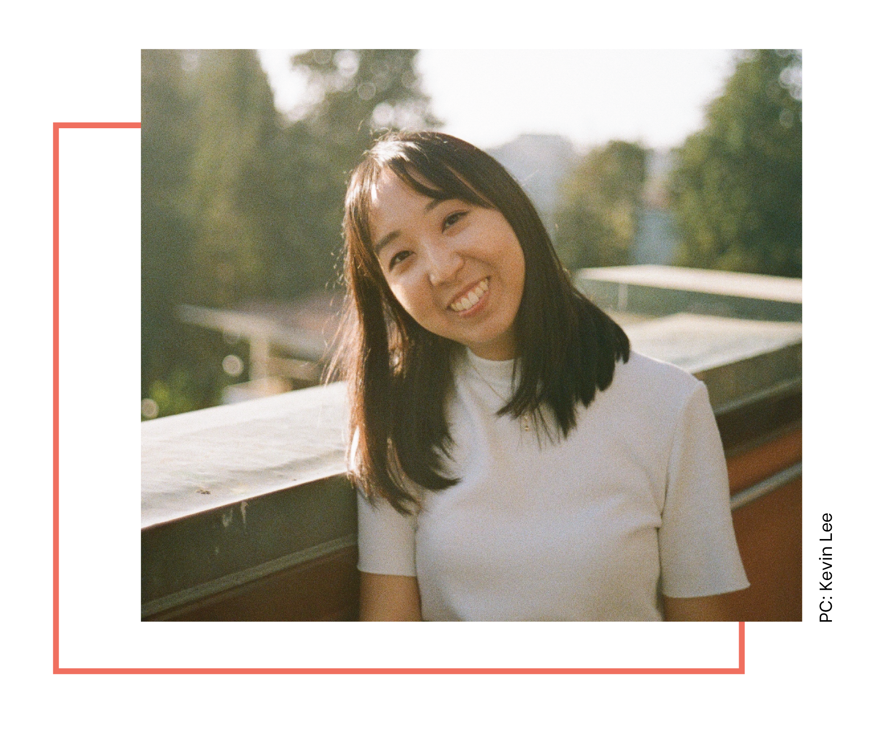

Hi! I'm Sheryl.
I recently graduated from UC Berkeley in August with a degree in Cognitive Science and am now working as a contract designer at Genentech. I'm still actively searching for full-time designer jobs though, so don't hesitate to reach out.
In terms of what motivates me, I love a good challenge. And people - they are and have always been very important to me. I always find having a positive impact on others very exciting.
In my time at Berkeley, I've been a TA for the Web Design DeCal, led two Web Design Teams for Innovative Design, and worked as a part-time User Researcher for Zebra Intelligence. In my free time, I love to do creative photography and cook. I also love meeting new people, so feel free to connect with me!
Spheres of Interest
Here's a diagram that shows what I have done and what I was interested in, what I am doing and what I'm currently interested in, and what I hope to be doing in the future.
Capabilities
DESIGN
PROGRAMS
CODE